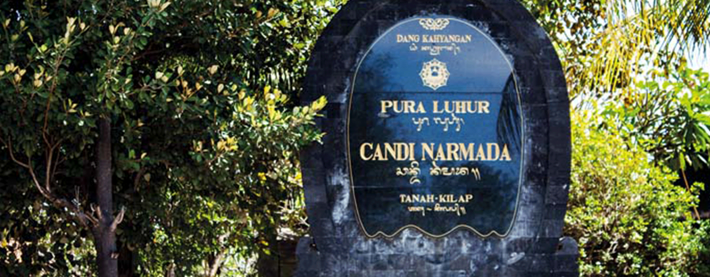
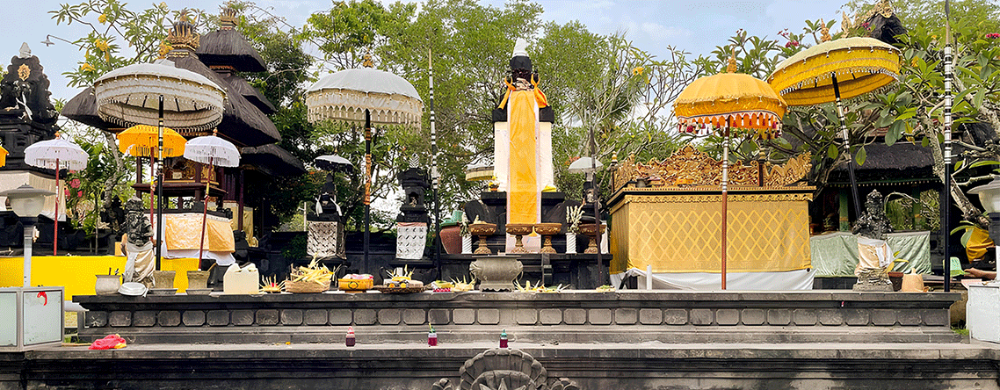
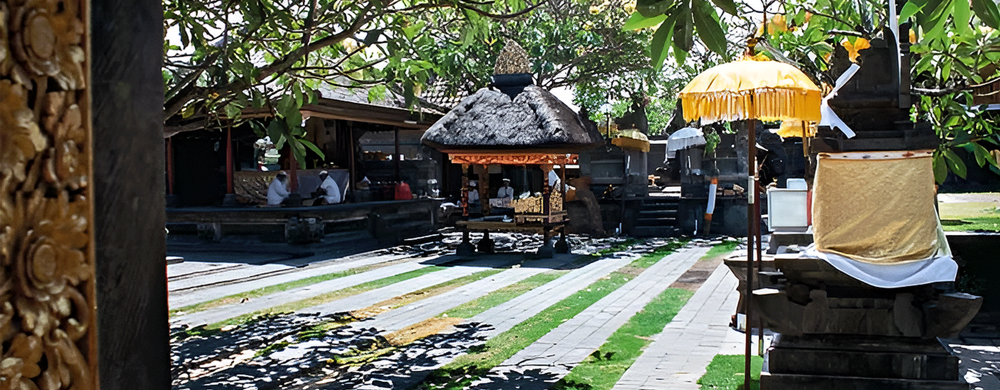
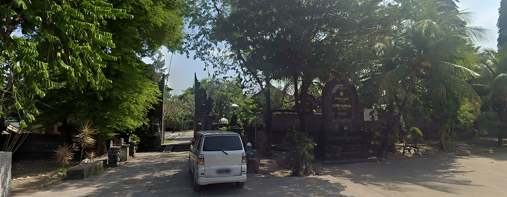

Pura Luhur Candi Narmada Tanah Kilap memiliki hubungan erat dengan perjalanan suci Ida Hyang Dwijendra (Dang Hyang Nirartha) dalam menyebarkan ajaran Hindu di Bali. Dalam perjalanan dharma yatra, beliau tiba di kawasan Tanah Kilap yang merupakan pertemuan aliran sungai. Tempat ini dipandang memiliki energi spiritual yang kuat karena air dianggap sebagai sumber kehidupan dan penyucian. Ida Hyang Dwijendra kemudian melakukan tapa semadi di lokasi tersebut dan merasakan bahwa air di sana memiliki sifat sebagai tirta amerta, yaitu air suci yang mampu membersihkan lahir dan batin. Setelah itu, beliau mensucikan kawasan tersebut dan memberi nama “Narmada”, yang diambil dari sungai suci di India sebagai simbol kesucian dan kehidupan. Sejak saat itu, kawasan ini berkembang menjadi tempat pemujaan dan penyucian diri (melukat), yang hingga sekarang masih digunakan oleh umat Hindu untuk memohon keselamatan, keseimbangan hidup, dan pembersihan spiritual. "Pura Luhur Candi Narmada adalah bagian integral dari warisan budaya Hindu di Bali," ujar Ida Bagus Made Sudana, pemangku Pura Luhur Candi Narmada.

Pura Luhur Candi Narmada Tanah Kilap diperkirakan berdiri sekitar abad ke-15 hingga 16 Masehi, seiring dengan perjalanan suci Ida Hyang Dwijendra (Dang Hyang Nirartha) di Bali. Setelah melakukan tapa semadi di kawasan Tanah Kilap, beliau merasakan bahwa air di sana memiliki sifat sebagai tirta amerta, yaitu air suci yang mampu membersihkan lahir dan batin. Setelah itu, beliau mensucikan kawasan tersebut dan memberi nama “Narmada”, yang diambil dari sungai suci di India sebagai simbol kesucian dan kehidupan. Sejak saat itu, kawasan ini berkembang menjadi tempat pemujaan dan penyucian diri (melukat), yang hingga sekarang masih digunakan oleh umat Hindu untuk memohon keselamatan, keseimbangan hidup, dan pembersihan spiritual. Pura Luhur Candi Narmada adalah bagian integral dari warisan budaya Hindu di Bali," ujar Ida Bagus Made Sudana, pemangku Pura Luhur Candi Narmada.

Dalam kepercayaan Hindu, air merupakan simbol utama kehidupan (amerta), kesucian, dan sarana penyucian diri. Oleh karena itu, pura yang berada di kawasan aliran atau pertemuan air umumnya memiliki fungsi spiritual sebagai tempat pembersihan lahir dan batin. Keberadaan pura ini di kawasan Tanah Kilap yang berdekatan dengan aliran air mencerminkan hubungan antara manusia dengan alam sebagai sumber kehidupan. Air tidak hanya dipandang secara fisik, tetapi juga sebagai media spiritual untuk menghubungkan manusia dengan Ida Sang Hyang Widhi Wasa. Secara filosofis, pura ini juga mencerminkan konsep keseimbangan dalam ajaran Hindu Bali, yaitu menjaga keharmonisan antara manusia (pawongan), lingkungan (palemahan), dan Tuhan (parahyangan), yang dikenal sebagai konsep Tri Hita Karana. Dengan demikian, Pura Luhur Candi Narmada Tanah Kilap dimaknai sebagai tempat untuk melakukan penyucian diri, menjaga keseimbangan hidup, serta memperkuat hubungan spiritual antara manusia dengan alam dan Tuhan.

Pura Luhur Candi Narmada Tanah Kilap terletak di Jl. Tanah Kilap, Pemogan, Denpasar Selatan, Kota Denpasar, Bali 80361, pada kawasan strategis perbatasan Denpasar dan Badung. Pura ini berada di wilayah muara Tukad Badung, yaitu pertemuan aliran sungai dengan pesisir laut selatan Bali, yang dalam konteks Hindu Bali memiliki keterkaitan dengan unsur air suci (tirta). Lokasinya mudah dijangkau karena berada di jalur utama penghubung Denpasar, Bandara Ngurah Rai, dan Nusa Dua, serta dekat dengan kawasan Waduk Muara Nusa Dua, menjadikannya tidak hanya penting secara spiritual tetapi juga strategis dari segi aksesibilitas dan geografis.